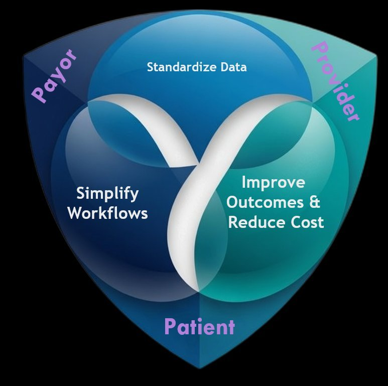

Vertical integration in healthcare can create value or destroy it. The one thing it is not, is easy.
Previously, we argued that some integration combinations create value, while others extract rent. One of those combinations is back in style: the Provider Sponsored Health Plan (PSHP). As Medicare Advantage has become the center of gravity in Medicare and value-based care continues passing more financial risk onto providers, owning the premium dollar starts to look more like control rather than exposure. As such, providers are launching, buying, and partnering their way into the insurance business again.
As recent examples, UCLA Health launched its own Medicare Advantage plan from scratch for the 2025 plan year, entering one of the most MA-saturated markets in the country. Risant Health is going a different route. Rather than build a plan, it acquires established regional systems that already operate one and then scales them under a single platform. Different routes, same logic: capture premium where you also deliver care.
It is worth being clear-eyed about how the previous waves have fared. When providers moved into health plans at scale in response to the ACA exchange introduction after 2010, the results counsel humility. Of the 42 systems that launched or acquired a plan in that period, only four were profitable by 2015, according to a Robert Wood Johnson Foundation analysis. Several of the rest ended up being wound down or were sold. That is not an argument against the move. It is an argument for understanding what the durable ones did differently, before committing capital to it.
PSHPs come in waves
Provider-Sponsored Health Plans are not new. They have arrived in three larger waves over the last forty years, each set off by a shift in the market around them.
The HMO-era wave of the 1980s and 1990s rode the managed-care boom. Providers launched plans to meet the demand; most were small, undercapitalized, and gone within a decade. Even Humana, then a hospital company, built its insurance business in this era before divesting the hospitals and reinventing itself as a pure payer. The ones that lasted, clustered where they held dense home-market concentration; Geisinger in central Pennsylvania, SelectHealth at Intermountain in Utah, UPMC Health Plan in western Pennsylvania, with Kaiser Permanente (already standing as the canonical integrated provider-payer) as examples.
The post-ACA wave of the 2010s followed the exchange marketplaces, which opened a new line of business in individual and small-group coverage. The plans that lasted were mostly existing PSHPs adapting to it rather than fresh entrants, and the era proved punishing even for the most sophisticated insurers. UnitedHealth, the biggest of them all, retreated from all but three of the 34 states where it sold exchange plans after losing hundreds of millions of dollars on that business. If the national carriers struggled to make the math work, the providers entering alongside them faced a steeper climb.
The current wave is driven by the growth of Medicare Advantage, with value-based care risk pulling systems back toward owning coverage. Risant Health is a notably ambitious attempt to scale provider-sponsored coverage across more than one geography.
The recurrence is the point. PSHPs come and go with the environment because the underlying economics are genuinely hard. What distinguishes the systems that endure is not the wave they rode in on. It is a specific set of characteristics they had in place before they launched.
The Risant experiment and the UCLA test
Risant is worth a closer look because it is not a plan launch in the usual sense. It is a Kaiser Foundation Hospitals platform that acquires established regional systems and scales them. Geisinger and Cone Health have been acquired so far, with four to five more community systems targeted by 2028 to 2029. That is why Geisinger appears in both the HMO-era story and this one: it is a survivor of the first wave that Risant is now using as a foundation for the current one. The continuity is the strategy, not a coincidence.
The strategy is to scale a proven value-based model across the country through acquisition, rather than build a plan from scratch one market at a time. Risant brings Kaiser Permanente’s value-based expertise, technology, and operating practices to community systems that already run their own plans, then standardizes how care is delivered across them — reducing the unwarranted variation that drives up cost and erodes quality. The acquired systems keep their own brands, plans, and multiple payer relationships; Risant calls these “pluralistic” markets, multi-payer and multi-provider by design, with Kaiser’s own plans entering as one payer among several rather than the only one. It is, in effect, a platform play: align proven components and add the infrastructure that makes them work consistently at scale.
The economics underneath that strategy are grounded in geography. Geisinger serves 1.2 million patients across rural and urban Pennsylvania with 550,000 health plan members; Cone Health covers the North Carolina Piedmont with comparable dynamics. These are markets where national carriers operate at a structural disadvantage: they amortize fixed costs across a smaller local base, manage care at a distance, and carry Star Ratings exposure to providers with which they have limited engagement. A regional system with clinical infrastructure already on the ground carries none of that weight, because the resources are already where the members are.
That cost asymmetry is widening. In 2026, roughly 2.9 million Medicare Advantage beneficiaries lost coverage as carriers exited markets, concentrated in rural and lower-penetration areas. Risant did not engineer that retreat and is not built around it, but it is positioned to benefit from it: as national plans pull back from markets they cannot serve profitably, the unit-cost math increasingly favors regional systems like the ones Risant is assembling. And the capital behind the bet is real — Kaiser has committed up to $5 billion to the Risant platform, with a minimum of roughly $2 billion earmarked for Geisinger through 2028. That is what it looks like to invest into the advantage deliberately.
What makes Risant instructive is that it is essentially acquiring the characteristics that let a PSHP endure rather than building them from scratch. The open question is the one Risant cannot acquire: whether Kaiser’s operating culture can be transplanted into systems with their own decades of identity. That is the same shift every PSHP faces, attempted at platform scale. We will come back to why it is the hardest part.
UCLA Health took the build route, and California is the reason building looked rational. The state’s delegated model has had providers doing plan work for decades; medical groups and IPAs taking capitation, managing utilization, in many arrangements paying claims, in some bearing global risk. A system operating inside those economics is already halfway to being an insurer; owning the license means capturing the full premium rather than a capitation slice of it. UCLA launched its plan in January 2025 through a Knox-Keene-licensed entity wholly owned by the UC Regents, covering every zip code in Los Angeles County, a market where Medicare Advantage penetration runs near 57% and beneficiaries choose among some seventy plans.
Two years in, the launch reads as a live test of everything that follows in this piece. UCLA built an inclusive network from the start — 7,000 physicians, including independent medical groups outside its walls. It has institutional capital prepared to fund the early years, and it needs it: enrollment remains in the low five figures, and as a new contract the plan carries no Star rating, which means no quality bonus revenue while every incumbent competitor collects one. The delegated-risk experience narrows the operational gap, the capital absorbs the losses, the network follows the playbook. What the launch cannot shortcut is scale, and in a market this saturated, scale is the criterion that brand alone does not guarantee.
What separates survivors from the rest
Four characteristics show up consistently across the PSHPs that last.
- Geographic concentration. Health plans compete on price and access, and neither is reachable without local scale. Every enduring PSHP holds dense home-market concentration; the ones that struggle tend to cluster in mid-density, competitive markets where no single player builds enough share to compete on cost. Concentration is not a strategy lever. It is an entry criterion.
- An inclusive network. Access cuts the other way here: a closed or narrow network is a weaker product, because members want their preferred providers covered, and a thin panel pushes them toward a competitor’s plan. The instinct to keep every patient inside your own walls works against you. What a hospital books as leakage is, on the plan side, an opportunity — a broad network that includes competitors attracts members, and members are future patients for the delivery system. Integration depth and network breadth are not in tension; they are complementary.
- Capital, and the patience to spend it. Plan operations consume capital well before they produce it. The standard route to scale is pricing competitively from day one and absorbing multi-year losses while membership builds to the level a plan needs to run efficiently — and that takes the stomach to fund them. The systems that lasted had reserves, philanthropic capital, or outside investment prepared to absorb them. Risant’s multibillion-dollar Kaiser backing is what that patience looks like at scale.
- Plan-side operational sophistication. Running a plan demands capabilities a delivery system does not have on hand: actuarial pricing, member services, claims administration, provider relations, regulatory compliance, Star Ratings management. Providers routinely underestimate the gap, and the ones that treat the plan as an extension of the hospital discover, too late, that it is a different business. The ones that succeed build or buy the expertise early.
“Integration depth and network breadth are not in tension; they are complementary.”
These four are necessary. A system can have every one of them in place and still come apart — because none of them is the thing that most often decides it.
The hospital has to shift perspective
This is the part most analyses of PSHP performance miss, and it is the one that most often decides the outcome.
A hospital runs on service revenue as its top line and unit margin per service as its discipline. The moment that same organization owns the plan, the frame inverts. Premium becomes the consolidated top line. What the hospital used to book as revenue from the plan side turns into an internal elimination on the consolidated statements. The hospital is no longer running a P&L against the payer. It is a cost center inside a premium-driven business.
That is a change in identity, not just in metrics. The money now runs through the plan, so decision-making, incentives, and operating processes all have to reorient around the consolidated entity rather than service-line margin. Leadership has to redefine success around contribution to the whole, align clinical strategy with what controls total cost across the population rather than what fills the building, and accept that the old playbook — push volume, defend rates, optimize length of stay against the payer — now works against the enterprise that owns it.
None of this happens on its own. The reorientation runs against decades of training, incentive, and professional identity, and it does not survive a memo. It takes strong clinical leadership willing to carry financial discipline into the delivery side and make the case for it to clinicians who have never had to think that way. Where that leadership is absent, the hospital keeps operating the way it always has, the plan cannot compete profitably, and the premium revenue that should fund both sides gets consumed by the delivery system. The integration that looked decisive on paper starts to cannibalize itself.
This is why the four characteristics are necessary but not sufficient. A system can hire the actuaries, raise the reserves, and build the network; those are the pieces that can be resourced. The cultural shift is the work that goes beyond them, and it is where provider-sponsored plans most often come apart, even when everything else is in place.
“There are no longer two sides to be at odds — one entity, aligned around the same population, can finally serve the patient as a single functioning whole.”
Where this wave goes
It is too early to know how long this wave lasts or how many of its entrants endure. But the track record points clearly to where the durable ones will come from. Not the systems with the most capital or the cleanest market — the ones that do the hardest part: the shift from running a hospital to running an integrated business. The rest can be resourced. That part has to be led.
Done right, that shift does more than balance a consolidated P&L. It dissolves the friction that has always defined the payer–provider relationship — the prior authorizations, the denials, the adversarial contracting — because there are no longer two sides to be at odds. One entity, aligned around the same population, can finally do what fragmented payers and providers never could: serve the patient as a single functioning whole.
There is one more reason this conversation matters now. The Break Up Big Medicine Act — the bipartisan bill we examined in the previous piece in this series — would prohibit a parent company from owning both a provider and an insurer, language that on its face reaches not just the national conglomerates but every provider-sponsored health plan in this piece. Whatever the bill’s prospects, it is a reminder that the structure carries regulatory risk alongside operational risk. It is also why the PSHPs that get it right matter beyond their own balance sheets: a regional system serving its community as payer and provider, profitably and well, is the strongest standing rebuttal to the claim that integration only extracts.

But alignment on paper is not alignment in practice. Operating as one entity at scale takes infrastructure built for it — measuring contribution to the whole instead of unit margin, surfacing where the delivery side is working against the plan side, holding the longitudinal data that makes value-based care compound, and standardizing the operating model the way the strongest platforms already do. That is what TRYNYTY builds. Vertical integration can be good or bad, and it is never easy. The systems that make it good are the ones that treat the hardest part as the main part — and that is the work we exist to support.